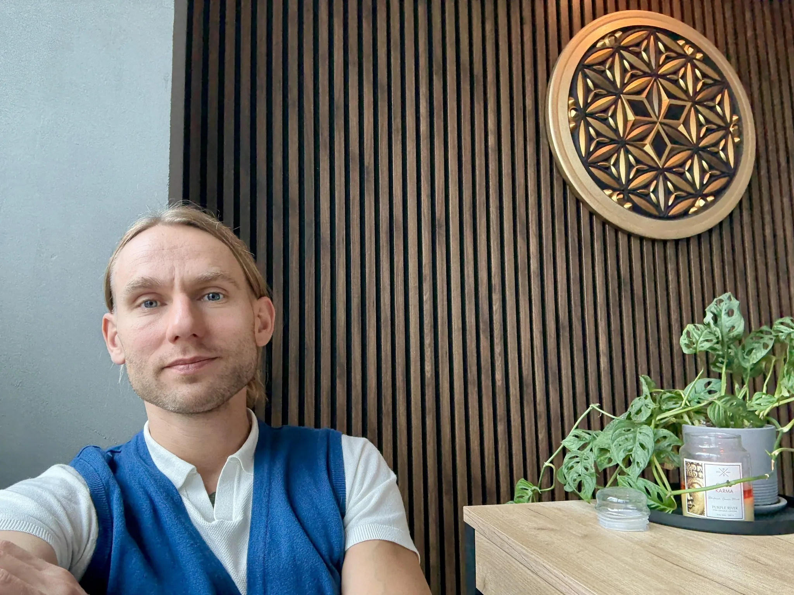

March 31, 2026

There is a kind of exhaustion that does not come from overwork. It comes from an inner compulsion -- a quiet, relentless drive to keep going, to stay useful, to never disappoint. It feels like duty, but underneath it is often fear: of being seen as not enough, of losing control, of what might surface if we finally stop.
The body always shows us the truth before the mind is ready to hear it. Shallow breathing. A jaw clenched without reason. Shoulders lifted as if bracing for impact. These are not just symptoms -- they are messages. The body is speaking, but we have learned to override its voice with willpower, discipline and habit.
Change does not begin with doing more. It begins with stopping. With a single, conscious breath that is not rushed toward the next task. With a moment of listening -- not to the thoughts racing through the mind, but to the body beneath them. What does it need right now? Not tomorrow. Not in theory. Right now.
When we practice this kind of attention -- genuine mindfulness, not the performative kind -- something begins to shift. The nervous system recognizes safety. The muscles that have been guarding for weeks, months, sometimes years, begin to soften. Not because we forced them, but because we finally gave them permission.
Softness returns first to the breath. It becomes fuller, slower, deeper -- not because we are controlling it, but because the body remembers how to breathe when it feels safe. Then the chest opens. The belly relaxes. The face softens. And in that space, something essential re-emerges: a sense of being present, not as a performance, but as a quiet, natural state.
Balance is not a destination. It is a practice of returning -- again and again -- to the body, to the breath, to the present moment. Not perfectly. Not always gracefully. But honestly.